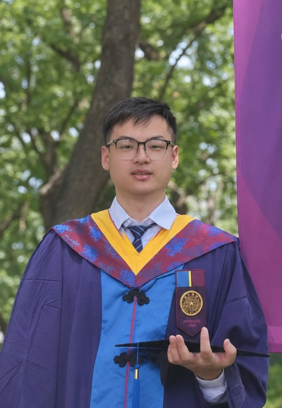
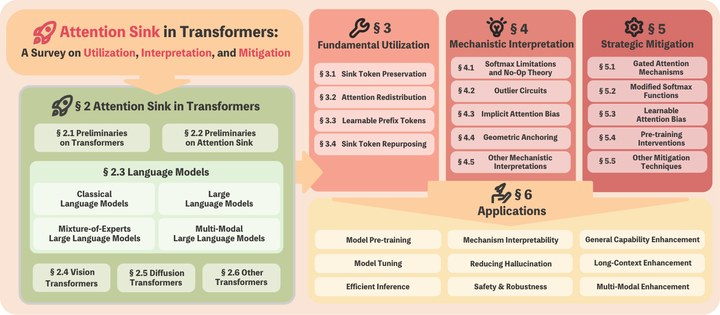

預印本
ReaDy: Recurrent States as Dynamic Context for Speculative Drafting in Hybrid Linear Attention Large Language Models
ReaDy 將混合線性注意力模型的循環狀態用作推測解碼的上下文。生成草稿時，模型按位置檢索所需信息，並利用低秩讀取和算子融合控制額外開銷。在所測的數學、代碼和對話任務中，解碼吞吐量均高於 DSpark 基線。


你好，歡迎來我的主頁！ 我是蘇遵海。2026 年在清華大學完成碩士學業後，我來到香港大學電機與計算機工程系攻讀博士，主要研究高效 AI。我的導師是黃毅教授，聯合導師是胡奕聰教授和香港理工大學的楊紅霞教授。歡迎到 NGai Lab 看看我們正在做的研究。
我的長期研究目標是讓先進的 AI 在日常設備和規模化服務中都能可靠、高效地運行，降低部署和使用門檻，真正讓 AI 走進千家萬戶，改變我們這個時代。圍繞這一願景，我對大模型及其他 AI 模型的研究設想分為四個相互關聯的方向。高效模型設計與架構：探索能以更低的計算開銷拓展模型能力的新範式與架構，讓模型按任務需求分配算力。高效模型訓練：研究如何讓有限的訓練資源更有效地轉化為模型能力，同時保持訓練穩定和模型質量。端側與雲端高效推理：研究如何把模型層面的效率轉化為實際部署中的收益，讓模型能在資源受限的邊緣裝置上運行，也能支撐雲端的規模化服務。模型理解與機制可解釋性：這一方向貫穿前三個主題，研究模型能力如何由內部計算產生，並據此判斷哪些計算可以簡化、哪些能力需要保留。圍繞這些方向，我與多位合作者共同完成的研究成果已獲 ICLR、NeurIPS、ACL 及 Computer Science Review 等會議和期刊錄用。
歡迎來信聊聊！ 我的電郵是 zh-su23@tsinghua.org.cn。如果你剛接觸 LLM，我很樂意分享一些入門經驗。對我的研究有疑問，或有想一起探索的點子？歡迎一起討論，交換想法。我也期待和有經驗的研究者一起探索難題，並在合作中承擔關鍵任務。
預印本
ReaDy 將混合線性注意力模型的循環狀態用作推測解碼的上下文。生成草稿時，模型按位置檢索所需信息，並利用低秩讀取和算子融合控制額外開銷。在所測的數學、代碼和對話任務中，解碼吞吐量均高於 DSpark 基線。
技術報告
StartLux-Decision 是一系列開放權重的決策模型，參數量從 8 億到 270 億。Instant 通過一次前向計算給出決策，AutoThink 在置信度較低時可展開推理。AutoThink 的強化學習目標獎勵決策概率預測質量的提升，並懲罰過長的推理過程。

預印本
在混合線性注意力大模型中，異常激活會在全注意力層之前形成尖峯，也可能在多箇中間層保持高位。研究跟蹤這些現象在訓練中何時出現，以及全注意力層的位置如何影響激活形態。受控干預實驗進一步檢驗了這些激活對任務準確率和檢索表現的影響。

預印本
OScaR 發現，當多個詞元共享同一量化尺度時，詞元之間的範數差異是誤差的重要來源。方法結合旋轉與詞元縮放，並用優化後的 CUDA 算子處理低比特 KV 緩存。在所測的純文本、多模態和全模態大模型上，使用 INT2 緩存的表現接近全精度基線。

預印本
注意力匯聚指 Transformer 將大量注意力集中在少數詞元上的現象。這篇綜述梳理了它的形成機制、可利用的場景及緩解策略。文章也討論這些發現如何用於模型訓練、高效推理與行為分析。
